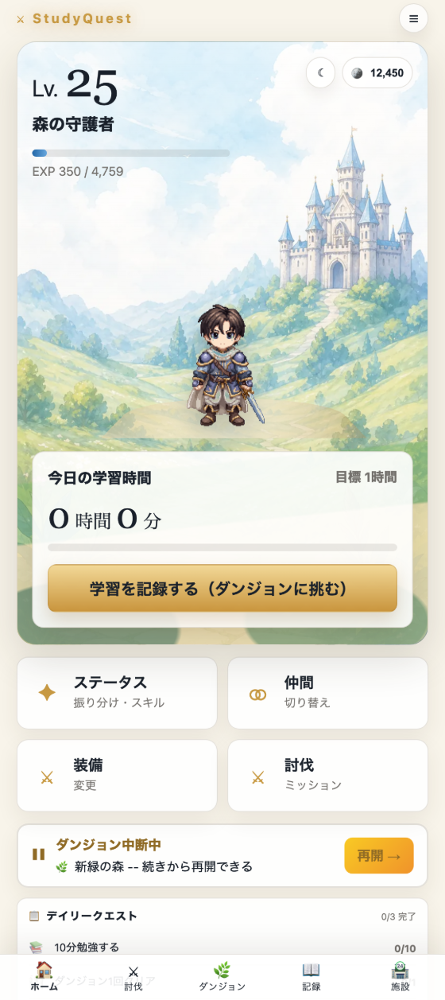

RPG 学習アプリ
StudyQuest
勉強時間が、
そのまま冒険になる。
集中した時間が、そのまま経験値に。StudyQuest は、勉強そのものを RPG の冒険に変えるアプリです。続けるほど、あなたの分身が強くなっていきます。
「勉強を続けたいのに、なかなか続かない」。StudyQuest は、その一番むずかしいところを、ゲームの楽しさで支えます。タイマーを回せば冒険が進み、積み重ねた時間がそのまま物語になります。
―
Screens
画面を、のぞいてみる。



01
Features
遊びながら、続けられる。
勉強タイマー
集中した時間が、そのままレベル上げに変わります。ただ計るだけのタイマーが、冒険の原動力になります。
ダンジョン探索
勉強した時間に応じて、ダンジョンでランダムにアイテムや素材が手に入ります。今日の頑張りが、次の発見につながります。
装備強化・進化
集めた素材で、武器や防具を鍛えて強化。コツコツ続けるほど、自分だけの装備が育っていきます。
ボス討伐
まとまった勉強時間を積み重ねると、強敵に挑戦できます。長い集中の先に、手応えのある一戦が待っています。
闘技場
連勝の報酬として、限定アクセサリーを獲得。腕試しのバトルが、続けるもう一つの理由になります。
仲間システム
冒険者を仲間にして、パーティで戦えます。ひとりの勉強が、賑やかな冒険に変わります。
02
About
ジャンル
RPG 学習アプリ
価格
完全無料
広告モデル
対応端末
iPhone
iOS
対応言語
4 言語
日本語 / English / 中文 / 한국어